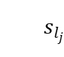
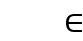
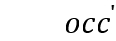
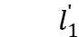
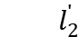
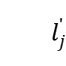
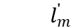
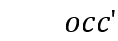
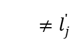

Mining self-adaptive one-off weak-gap strong sequential patterns in a sequence of characters with the OWSP-Miner algorithm (SPMF documentation)
This example explains how to run the OWSP-Miner algorithm using the SPMF open-source data mining library.
How to run this example?
- If you are using the graphical interface, (1) choose the "OWSPMiner" algorithm, (2) select the input file "contextMAPD.txt", (3) set the output file name (e.g. "output.txt") (4) set the minimum support threshold, the weak character set, and char count to read, respectively to 2, g , and 20000 and (4) click "Run algorithm".
- If you want to execute this example from the command
line, then execute this command:
java -jar spmf.jar run OWSPMiner contextMAPD.txt output.txt 2 g 20000 in a folder containing spmf.jar and the example input file contextMAPD.txt. - If you are using the source code version of SPMF, launch the file "MainTestOWSP-Miner.java" in the package ca.pfv.SPMF.tests
What is OWSP-Miner?
OWSP-Miner is an algorithm one-off weak-gap strong sequential patterns in a sequence of characters, proposed by Wu et al. (2022).
This is a Java version, converted from the original C++ implementation by Youxi Wu et al. (available at : https://github.com/wuc567/Pattern-Mining)
What is the input of OWSP-Miner?
The input is a sequence of symbols (e.g. events or characters) and five parameters that are set by the user:
- the given minimum support threshold minsup (e.g. 2 in tihs example)
- a weak character set (e.g. {g} in this example)
- the maximum length constraint maxlen (e.g. 20000 in this example)
A sequence for this algorithm is an ordered list of characters that are taken from a character set.
To run this algorithm, an input file must be given, which contains a sequence. For example, the file contextMAPD.txt of the SPMF distribution contains the sequence ttcctccgcg.
This sequence can represent for example a biological sequence, indicating that the symbol T, was followed by T, then followed by C, by C, by T, by C, by C, by G, by C, and by G.
In the input file format, the sequence is simply provided as a line in a text file:
ttcctccgcg
In that format, each symbol is a single character such as : a, c, g, t....
What is the output of OWSP-Miner?
The output of OWSP-Miner is all self-adaptive One-off Weak-gap Strong Patterns (OSWPs). Those are subsequences that occur in more than threshold sequences of the database and respect some conditions.
To try to explain more clearly what is the output of OWSP-Miner, it is necessary to review some definition.
Let say that we have a set of characters (Σ), and that it is divided into two sets: the strong characters (Γ) and the weak characters (Ω).
In this example, the set of character is Σ = {c,t,g}, the weak characters are Ω = {g} and the remaining characters are the strong characters, i.e. Γ= {c,t}.
A pattern P is a sequence of characters that can appear several times in a sequence. For example, a pattern P containing m characters can be denoted as P = p0 p1 p2 p3 ... pm indicating that p0 was followed by p1, then followed by p2... and so on.
The output of OWSP-Miner is all the subsequences that appear at least minsup times in the input sequence and respect the constraints set by the user. For example, in the above example, it can be intuitively observed that the subsequence T,C and C,C appear several times in the input sequence. And itcan be observed from this example that sometimes the occurrences will have some gaps (this means that some symbols can be skipped). For instance, the last occurrence of C,C is separated by the character G, which could be skipped. Thus, in this example, we search for patterns by setting {g} as a weak character that can be skipped..
A self-adaptive strong pattern of length m can be expressed as p=p1[0,+∞)…pj[0,+∞)...pm or p=p1*…pj*...pm (pj∈Γ, 1≤j≤m).
Given a sequence s=s1s2…sn and pattern p= p1*…pj*...pm. Suppose occ=<l1, l2, …, lj, … lm> (

=pj, 1≤j≤m and 1≤lj≤n) is an occurrence of pattern p in sequence s. occ is a weak-gap occurrence if and only if for all sy
Ω(lj-1<y<lj and 2≤j≤m). Suppose
=<
,
, …,
,…
> is another weak-gap occurrence. occ and
are two one-off weak-gap occurrences, if and only if li
(1≤i, j≤m).The one-off support of strong pattern p in sequence s is the number of one-off weak-gap occurrences, denoted by sup (p, s). If sup (p, s) is no less than the support threshold, then p is called an OWSP.
For example, in the above example, if we set threshold = 2, weak character set = {g} and maxlen = 20000, the following patterns are found:
| Pattern | Support (number of occurrences) |
| c | 5 |
| t | 3 |
| cc | 2 |
| tc | 2 |
| tcc | 2 |
For example, the last line is the pattern indicating that event t is followed by c, and then followed by c. The line indicates that it has two (non-overlapping) occurrences in the sequence.
Since the definition used in this paper is relatively complex, for a more precise and formal definition of the output, please see the research paper describing the MAPD algorithm (Wu et al., 2018).
Input file format
The input file format is a text file. For example, the file contextMAPD.txt contains this content:
@FILETYPE="String sequence"
@SOURCE="SPMF SOFTWARE https://philippe-fournier-viger.com/spmf/"
ttcctccgcg
The two first lines are metadata indicating the type of file and the source of the data. Then the third line line contain a sequence of character.
Output file format
The output file format is defined as follows. It is a text file. The first two lines are metadata indicating the type of patterns in this file and the source of the data. Then the following lines provide the list of patterns, where each line is a frequent sequential pattern. Each symbol from a sequential pattern is a positive integer. The value "-1" is used to separate symbols . On each line, the sequential pattern is first indicated. Then, the keyword "#SUP:" appears followed by an integer indicating the support of the pattern as a number of occurrences. For example, a few lines from the output file from the previous example are shown below:
@FILETYPE="Self-adaptive one-off weak-gap strong sequential patterns"
@SOURCE="SPMF SOFTWARE https://philippe-fournier-viger.com/spmf/"
c #SUP:5
t #SUP:3
cc #SUP:2
tc #SUP:2
tcc #SUP:2
The last line indicates that the frequent sequential pattern consisting of the symbol t followed by the symbol c, followed by c has a support of 2 (two occurrences in the input sequence).
Performance
OWSP-Miner is an efficient algorithm for discovering this type of pattern. This is a conversion to Java of the original implementation.
Where can I get more information about OWSP-Miner?
The OWSP-Miner algorithm is described in this article:
Youxi Wu, Yao Tong, Xingquan Zhu, Xindong Wu: OWSP-Miner: Nonoverlapping Sequence Pattern Mining With Gap Constraints. IEEE Trans. Cybern. 48(10): 2809-2822 (2018)